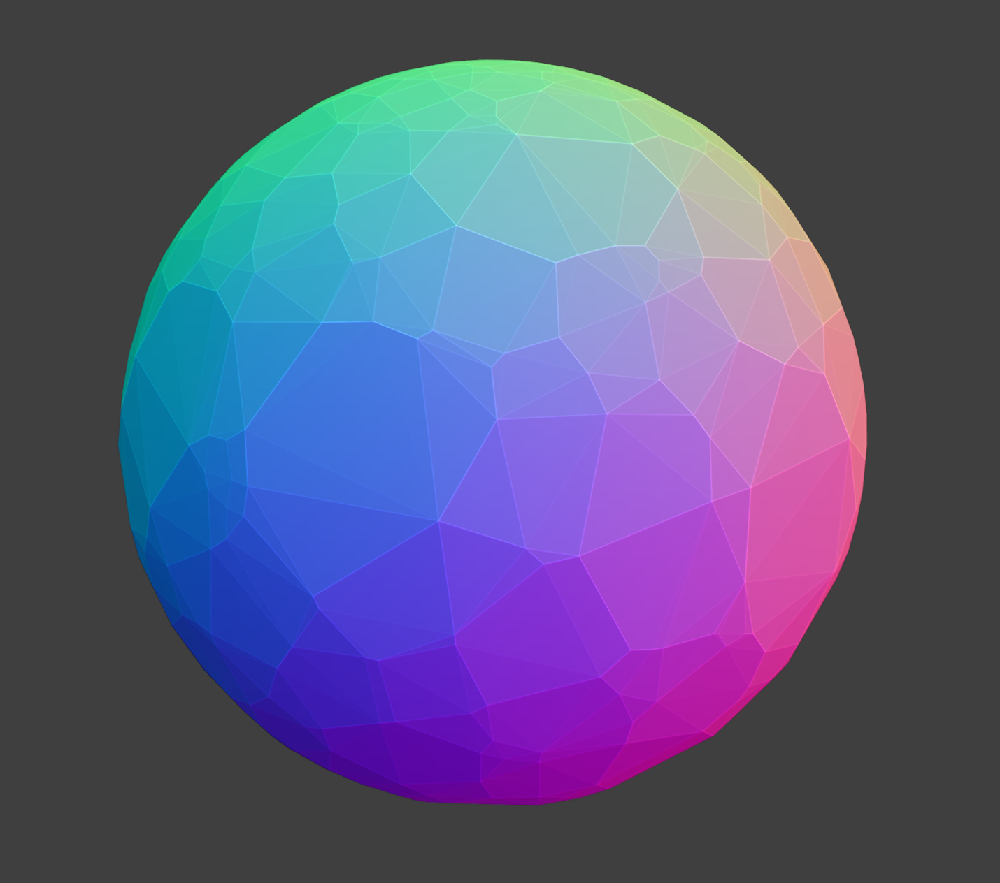

Barren wasteland here for now. I plan to put some fun looking things I make in my masters project/thesis within computational geometry and delaunay triangulations.
For now all I have a cool image of a the convex hull of a random points on a sphere. I think it looks pretty neat.
